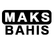
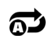

Tanrıların Gazabı, Yeniden Spin, Free Spin ve daha birçok eğlenceli fonksiyon içeren, Yunan mitolojisi temalı, TANRILARIN ÖFKESİ video slot oyununa hoş geldiniz.
OYUN HAKKINDA
Tanrıların Öfkesi, her makarada görünen 5 sembol ile, 5x5 Makaralı Slot oyunudur.
ANA OYUN
Fonksi̇yon kazandirmayan spin'ler İçİn rasgele olarak teti̇kleni̇r. Her tanri kazandiran kombi̇nasyonlar oluşumuna yardimci özgün bi̇r yeteneğe sahi̇pti̇r.
Zeus: kazandirmayan kümeler oluşturan semboller, eşleşen semboller kümesi̇ oluşturmak üzere farkli sembole dönüşürler
Poseidon: semboller, eşleşen semboller kümesi̇ oluşturmak üzere di̇zi̇ne ekleni̇rler.
Hades: tüm kaybeden ödeme sembolleri̇, eşleşen sembollere dönüşürler ve İki̇ spi̇n teti̇kleni̇r.
AKTİF TANRI HER TETİKLENME SONRASINDA DEĞİŞİR.
HOT SPOT İLE BAŞLAYAN TANRILARIN GAZABI FONKSİYONU
Her spin üzeri̇nde, rasgele bi̇r 1x3 hot spot yanacaktir, di̇key veya yatay olabi̇li̇r. 3 tanrinin hepsi̇ de 3 hot spot pozi̇syonunu aldiğinda tanrilarin gazabi fonksi̇yonu teti̇kleni̇r. Wild sembolü, kombi̇nasyonun bi̇r parçasi olarak kullanilabi̇li̇r. Fonksi̇yon sirasinda, tanrilar güçleri̇ni̇ göstermek üzere dönerler. Fonksi̇yon yeni̇den teti̇klenemez. Yeni̇ oyun İçİn etki̇n tanri değİşİr.
YENİDEN SPIN FONKSİYONU
6 veya daha fazla eşleşen sembol, yeri̇nde ki̇li̇tleni̇r ve 2 yeni̇den spin ödülü veri̇li̇r. Eşleşmeyen sembolleri̇n olduğu tüm makaralar yeni̇den döner. Yeni̇den spin sirasinda, yeni̇ eşleşen semboller ve wild sembolleri̇ yerleri̇nde ki̇li̇tleni̇r ve daha büyük kazanç oluşturmak üzere eşleşen sembol kümeleri̇ne eklenebi̇li̇rler. Kazanci artirsin veya artirmasin, gelen herhangi̇ bi̇r eşleşen sembol veya wild sembolü, yeni̇den spin sayacini sifirlar. Sayaç sifira ulaştiğinda ve ni̇hai̇ kazanç ödemesi̇ gerçekleşti̇ğİnde yeni̇den spin sonlanir. Çoklu kazançlar ki̇li̇tlenebi̇li̇r.
Bedava Döndürmeler
6, 7, 8, 9, 10 veya daha fazla scatter sembolü, sirasiyla 5, 8, 10, 12, 20 free spin ödülü kazandirir. Free spin öncesi̇nde bi̇r tanri seçİn. Seçİlen tanri, her kazandirmayan spin üzeri̇nde gücünü göstermek üzere etki̇n kalir. Free spin'ler yeni̇den teti̇klenebi̇li̇r.
NASIL OYNANIR
-
Stake/jeton adını seçin.
-
Yeni bir oyun çevrimini başlatmak için, Spin düğmesine tıklayın (masaüstünden) veya dokunun (cep telefonundan).
OYUN DÜĞMELERİ
|
Simge |
Masaüstü |
Cep telefonu |
Mobil |
|
|
DÖNDÜR | DÖNDÜR | Bir tekli çevrim başlatır |
|  | Maks bahis | (Ayarlar menüsü ile birlikte, Stake Seçim ekranını içerir) | Bahis konfigürasyonunu, maksimum stake level'ine ayarlar. Başlamak için, spin düğmesine basın. |
|
|
OTOMATİK OYUN | Autoplay için Spin'i tutar (veya ayarlar menüsünde bulunur) | Aynı anda birden çok döngü başlatmak için oyundaki tüm Otomatik Oynatma Seçeneklerini gösteren menü ekranını getirir. |
|
|
Stake Seçimi | Stake Seçimi (veya ayarlar menüsündedir) | Oyuncunun bahis seviyelerini seçmesi için Stake Seçeneklerini getirir. |
|
|
Ayarlar Menüsü | Ayarlar Menüsü | Aşağıdakileri sunan ayrı bir ayar ekranı açar: Ana sayfa, Ses, Oyun ayarları, Geçmiş, Bilgi/Yardım ve Kasa (istendiğinde) |
|
|
Ses | (Ana ayarlar, ayarlar menüsünde mevcuttur) | Masaüstü - Oyuncunun müzikleri veya ses efektlerini bağımsız olarak açabilmesi için, audio ayarlar menüsünü açar. |
|
|
Turbo Play | (Oyun ayarları menüsünde mevcut) | Makaraların hızını Quickspin olarak değiştirir |
AYAR DÜĞMELERİ
| Sembol | Simge | Davranış |
| Kasiyer |
|
Oyuncunun hesabına para ekleyebilmesi için, bir operatörün depozito sayfalarına dönüşünü başlatır (operatör sisteminde kullanılabilir fonksiyon olduğu düşünülerek). |
| Ödeme tablosu ve Yardım |
|
Ayrıntıları Ödeme tablosunda gösterir ve oyunun açıklamalarını sunar. |
| Oyun Geçmişi |
|
Oyuncuya, bu oyun oturumunda oynanan oyun çevrimlerinin bir listesini gösterir. |
| Bahis Ayarları |
|
Buradan itibaren, oyuncu oyun için stake değerini belirleyebilir veya mevcut diğer seçeneklerden birini seçebilir. |
| Autoplay'ler |  | Kayıp Sınırları dahil olmak üzere (uygulanabiliyorsa) çeşitli standart ve genişletilmiş Otomatik Oyun seçeneklerinin seçilebileceği ve başlatılabildiği sayfayı başlatır |
| Oyun Ayarları |
|
Mevcut çeşitli genel ayarlar seçeneklerini gösterir (örneğin, oyuncular için oturum sırasında hangi seslerin çalınmasını istediklerini belirlemek üzere Oyuncu tarafından seçilebilen Ses ayarları). |
| Karşılama sayfası |
|
Mevcut oyun oturumundan çıkar (son komuttan sonra) ve ekranı Operatörlerin Ana Oyun Menüsü sayfalarına geri döndürür. |
DİĞER OYUN BİLGİSİ
-
Farklı kümelerde denk gelen kazançlar, toplanır ve oyuncuya ödenir.
-
Jeton Değeri - Geçerli ayarların teorik stake ödülünü görüntüler. Tüm kazançlar, bir Para Ödülü kazancına dönüştürülmek üzere jeton değeriyle çarpılması gereken para cinsinden gösterilirler.
-
Bahis - Mevcut ayarın bahis değerini gösterir. Bahis boyu, çarpan ile 1 jeton çarpımıdır.
-
TOPLAM BAHİS, 40 JETON OLAN ÇOKLU OYUNCU BAHSİ İLE ÇARPILAN JETON DEĞERİDİR.
-
Maks. Bahis (YALNIZCA Masaüstü) - Jeton değerini mevcut en geniş değere ayarlayın.
-
Spin Düğmesi - Oyunu başlatır Makaralar döndürüldüğünde, spin düğmesi Turbo Durdurma Düğmesine dönüşür. Makaraları derhal durdurmak için, Turbo Stop Düğmesine basın.
-
Autoplay – Her defasında spin düğmesine basmak gerekmeksizin, oynanacak oyunu seçebilirsiniz. Autoplay düğmesine basarak, auto play uygulanacak tur sayısını seçin (veya Autoplay Menüsünü açmak için Spin Düğmesini aşağı çekerek (cep telefonundan)). Uygulanablir olduğunda, Oyun Ayarları içinde autoplay durdurmak için, ek koşulları seçebilirsiniz. Bazı oyun müşteri sürümlerinde kayıp limiti, autoplay oturumunuz sırasında belirlenen limitin üzerinde kaybedildiğinde uyarır. Auroplay'i manuel olarak durdurmak için, Stop Autoplay düğmesine basın.
-
Kazanç - Mevcut veya son kazanç ödemesi için kazancı gösterir.
-
Nakit / Jeton- Hesap bakiyesini, oyuncunun seçimine bagli olarak Nakit (parasal deger) veya Jeton (kredi sayisi) olarak görüntüler. Standart görüntüleme, Cash şeklindedir.
-
Paranın Jetona ve Jetonun Paraya çevrilmesi, en yakın özgün değere tamamlamak için 2 ondalık değerle gerçekleştirilir. Bununla birlikte, Jeton dönüşümleri daima tam sayıyla görüntülenecektir.
OYUNCUYA GERİ DÖN
-
Teorik olarak oyuncuya geri dönen, %96.50.
EK BİLGİ
-
Tüm kazanan kombinasyonlar, altı veya daha fazla sembollü küme kombinasyonu için ödenir.
-
Fonksiyonlar sırasında gerçekleşen kazançlar, küme kombinasyonlarına ilave olarak ödenirler.
-
Oyun donanımının / yazılımın arızalanması durumunda, tüm etkilenen bahisler ve ödemeler geçersiz sayılır ve tüm etkilenen bahisler iade edilir.
-
Oyundaki üst kazanç limiti, eşdeğer 250 000 €'dur.